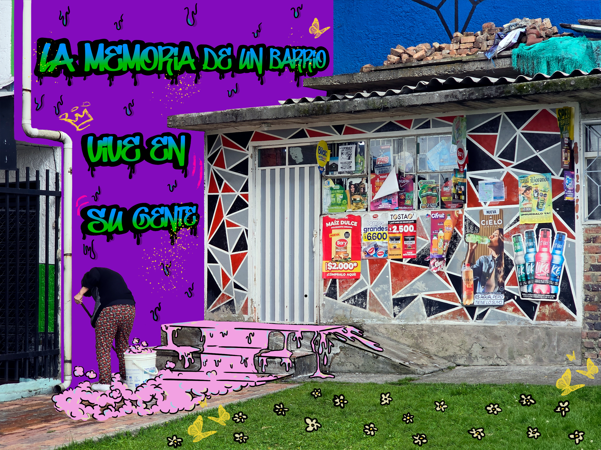

06 · Archivo histórico y comunitario
El barrio Los Laches y Santa Fe, ayer y hoy
Desliza el comparador interactivo con fotografías reales de archivo de Bogotá (mediados del siglo XX vs. las laderas actuales de la Localidad de Santa Fe).

 Ayer · Mediados del siglo XX
Hoy · Laderas de Santa Fe
Ayer · Mediados del siglo XX
Hoy · Laderas de Santa Fe
Memoria Visual · Álbum de Barrio
De las canteras de greda a patrimonio vivo de Santa Fe
Tras las transformaciones urbanas de Bogotá a partir de 1948–1950, las laderas orientales sobre el barrio Egipto y La Peña recibieron a cientos de familias boyacenses y santandereanas que trabajaban en los chircales artesanales. Domingo a domingo levantaron la escuela, la parroquia, las escaleras y el alcantarillado.
Este archivo reúne fotografías históricas documentales de Bogotá junto con vistas reales contemporáneas de los Cerros Orientales y del Santuario de Nuestra Señora de la Peña.
Arrastra el control o usa las flechas del teclado para comparar.
Álbum por épocas
-
Siglo XX
Archivo Histórico · Siglo XX
El antiguo centro de Bogotá y el ascenso a los Cerros
Registro histórico de la ciudad tradicional cuyos materiales de mampostería y ladrillo cocido provenían de los chircales de San Cristóbal y Santa Fe.
-
1975
Monumento Nacional · 1975
Declaratoria del Santuario de La Peña en Los Laches
Vista real de la fachada colonial del templo de Nuestra Señora de la Peña, custodiado por los habitantes del barrio Los Laches desde su consolidación urbana.
-
Hoy
Actualidad · Cerros Orientales
Los Laches como balcón ambiental de Bogotá
Panorámica real de la relación entre el tejido urbano de la Localidad de Santa Fe y la Reserva Forestal Protectora de los Cerros Orientales.